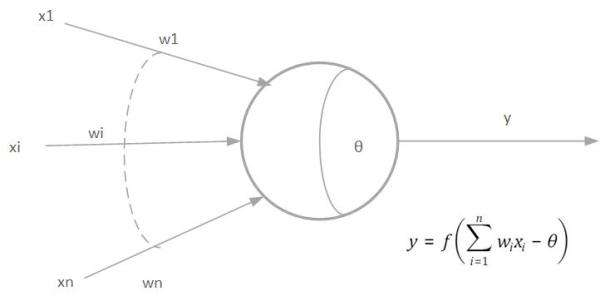
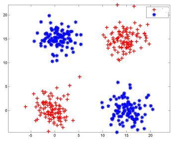
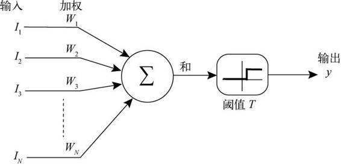
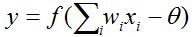
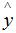
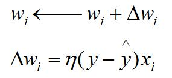
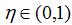
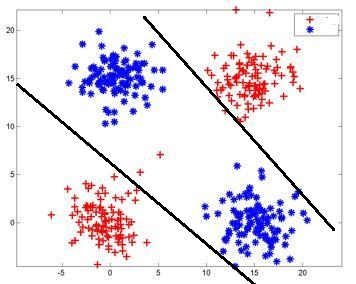
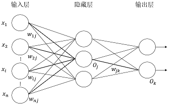

M-P神经元
神经网络中最基本的成分就是神经元（neuron）模型。在生物神经网络中，每个神经元与其他神经元相连，当它“兴奋”时，就会向相连的神经元发送化学物质，从而改变这些神经元内的电位；如果某神经元的电位超过了一个阈值（threshold），那么它就会被激活，即“兴奋”起来，向其他神经元发送化学物质。M-P神经元就是将上述情形进行抽象所得，如下图。

在上述模型中，神经元收到来自n个其他神经元传递过来的输入信号，这些输入信号通过带权重的连接进行传递，神经元接收到的总输入值将与神经元的阈值进行比较，然后通过“激活函数（activation function”）处理以产生神经元的输出。
这样把许多这样的神经元按一定的层次结构连接起来，就得到了神经网络。
感知机
感知机（Perceptron）是神经网络和支持向量机的基础。
感知机原理
感知机是二分类的线性模型，其输入是实例的特征向量，输出的是事例的类别，分别是+1和-1，属于判别模型。
假设训练数据集是线性可分的，即存在一个线性超平面能将它们分开，而感知机的学习过程就一定会收敛（converge）而求得适当的权向量w=（w1;w2;…;wn);最后求得一个能够将训练数据集正实例点和负实例点完全正确分开的分离超平面，如下图。
如果是非线性可分的数据，感知机学习过程将会发生振荡（fluctuation），w难以稳定下来，不能求得合适解，最后无法获得超平面。

感知机结构
它有两层神经元组成，输入层接收外界输入信号传递给输出层，输出层是M-P神经元，如下图

感知机学习过程
对于输出，权重wi(i=1,2,…,n)以及阈值θ可通过学习得到。阈值θ可看做一个固定输入为-1.0的“哑结点”所对应的连接权重w(n+1)，这样，权重和阈值的学习就可统一为权重的学习。
感知机的学习规则非常简单，对训练样例(x,y)，若当前感知机的输出为，则感知机的权重调整为：

其中称为学习率（learning rate）。
感知机解决非线性问题
要解决非线性可分问题，需要考虑使用多层功能神经元。如下图则可用两层感知机解决问题。

输出层与输入层之间的一层神经元，被称为隐含层（hidden layer），隐含层和输出层神经元都是拥有激活函数的功能神经元
多层前馈神经网络
常见的神经网络如下图所示（由两层或两层以上的感知机所组成）。

每一层神经元与下一层神经元全互连，神经元之间不存在同层连接，也不存在跨层连接，这样的神经网络结构通常称为“多层前馈神经网络”（multi-layer feedforward neural networks），其中输入层神经元接收外界输入，隐层与输出层神经元对信号进行加工，最终结果由输出层神经元输出。
神经网络的学习过程，就是根据训练数据来调整神经元之间的连接权以及每个功能神经元的阈值，神经网络“学”到的东西，蕴含在连接权与阈值之中。
注：“前馈”是指网络拓扑结构上不存在环或回路
参考
[1]感知机原理（perceptron）
[2]周志华.机器学习.北京：清华大学出版社，2016年